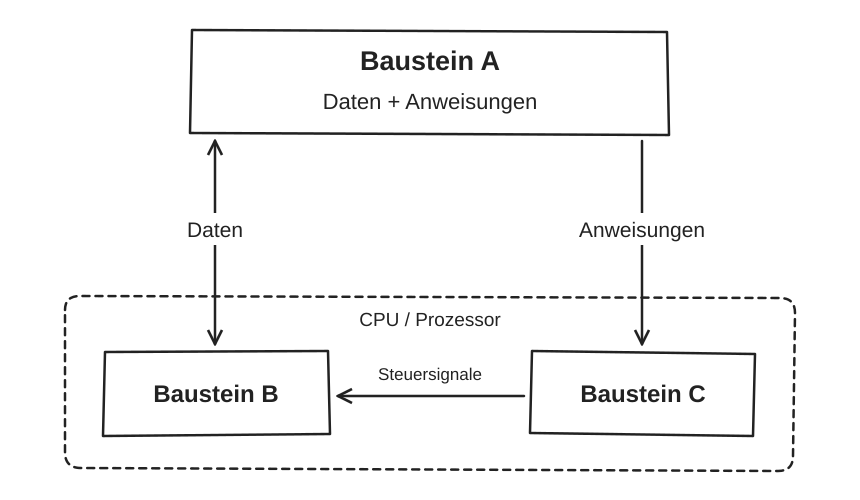
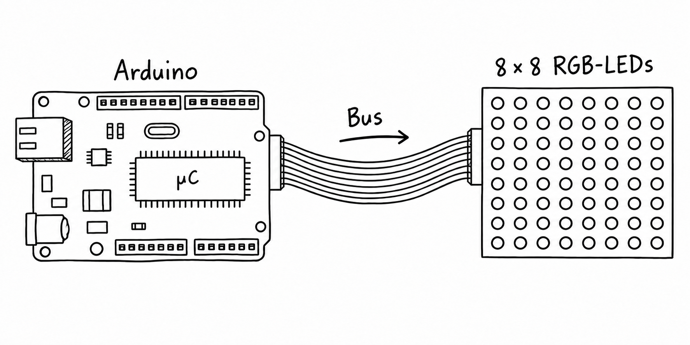

03 · Rechnersysteme verstehen
Vom Programm zum Prozessor
Wie wird aus einem Text eine Berechnung? Erarbeiten Sie die Bausteine eines Rechners und übertragen Sie das Modell auf ein leuchtendes Ausgabegerät.
Diese Lektion begleitet das Arbeitsblatt „Wie verarbeitet ein Computer ein Programm?“ (IF_EF_06). Bearbeiten Sie zuerst die jeweilige Aufgabe. Öffnen Sie bei Bedarf einen Hinweis und vergleichen Sie erst danach Ihren Lösungsansatz.
Zum Arbeitsblatt · Aufgabe 1
Ein Programm als Eingabe
Beschreiben Sie zunächst in eigenen Worten, was dieses Programm macht. Unterscheiden Sie die Daten, die Berechnung und die sichtbare Ausgabe.
public class Main {
public static void main(String[] args) {
int zahl1 = 5;
int zahl2 = 3;
int ergebnis = zahl1 + zahl2;
System.out.println(ergebnis);
}
}Hinweis 1: Woher kommen die Daten?
Suchen Sie nach den Zahlen im Quelltext. Das Programm fragt nicht nach einer Tastatureingabe. Welche Werte stehen schon fest, bevor es startet?
Hinweis 2: Verarbeitung oder Ausgabe?
Das Pluszeichen beschreibt eine Berechnung. Eine Zuweisung speichert einen Wert in einer Variablen. Erst System.out.println(...) macht das Ergebnis in der Konsole sichtbar.
Den Ablauf nachvollziehen
Führen Sie die vier Anweisungen schrittweise aus. Das ist eine didaktische Simulation, keine Java-Laufzeit und keine Darstellung einzelner Maschinenbefehle.
1 · int zahl1 = 5;2 · int zahl2 = 3;3 · int ergebnis = zahl1 + zahl2;4 · System.out.println(ergebnis);Vergleichen: EVA und die Leitfrage
- Eingabe
- Die vorgegebenen Daten 5 und 3. Hier gibt es keine Benutzereingabe während der Ausführung.
- Verarbeitung
- Die Zahlen werden addiert; die Summe wird in
ergebnisgespeichert. - Ausgabe
- Die Konsole zeigt 8.
Eine zweite Sichtweise führt zur Leitfrage: Auch der gesamte Quelltext wird dem Computersystem als Eingabe übergeben. Ein Compiler muss diesen Text erst verarbeiten, bevor das Programm ausgeführt werden kann.
Zum Arbeitsblatt · Aufgabe 2a–c
Regeln, nach denen Quelltext aufgebaut ist
Führen Sie die Änderungen aus Aufgabe 2 in IntelliJ durch. Stellen Sie zwischen den Versuchen die ursprüngliche Zeile wieder her. Notieren Sie jeweils: Was wurde verändert? Wo erscheint die Markierung? Kann das Programm neu übersetzt werden?
int ergebnis = zahl1 + zahl2;Die Auswahl zeigt die Erklärung zu diesen drei Beispielen. Sie führt keinen echten Compiler aus. Der Wortlaut der Fehlermeldungen in IntelliJ kann abweichen.
Formulierungshilfe für Aufgabe 2c
Vervollständigen Sie: „Unter Syntax versteht man die Regeln, nach denen …“. Nennen Sie danach ein Beispiel aus Ihren beiden Versuchen.
Vergleichen: Was bedeutet Syntax?
Die Syntax legt fest, wie gültiger Quelltext aufgebaut sein muss. Diese Java-Anweisungen benötigen ein abschließendes Semikolon; bei einer Addition braucht das Pluszeichen zwei Operanden. Ein Syntaxfehler verhindert die erfolgreiche Übersetzung des geänderten Programms.
Umgekehrt garantiert korrekte Syntax noch nicht das gewünschte Ergebnis: Auch eine formal korrekte Berechnung kann inhaltlich falsch sein.
Zum Arbeitsblatt · Aufgabe 3a–b
Versteht der Prozessor Java?
Ein Text kann als Nullen und Einsen gespeichert sein, ohne ein ausführbares Programm für den Prozessor zu sein. Die Zeichenfolge zahl1 + zahl2 beschreibt für Menschen eine Addition. Der Prozessor benötigt dafür passende Maschinenbefehle.
Hinweis zu den beiden Lücken
Die erste Lücke bezeichnet das Werkzeug, das den Quelltext prüft und übersetzt. Die zweite bezeichnet das Ergebnis dieser Übersetzung.
Vergleichen: Der Weg bei Java
- Java-Quelltext
Text für Menschen - Compiler
Prüft und übersetzt - Bytecode
Übersetztes Java-Programm - Ausführung durch die JVM
Die Java Virtual Machine ermöglicht die Ausführung auf dem jeweiligen Rechner.
Die fehlenden Stationen auf dem Blatt sind also Compiler und übersetztes Programm / Bytecode.
Die CPU führt ihren Maschinencode aus. Java-Bytecode ist noch nicht der native Maschinencode der CPU: Die JVM interpretiert ihn oder übersetzt ihn weiter. Für diese Aufgabe genügt diese Einordnung; die JVM ist hier kein eigenes Lernthema.
In einem Satz: „Der Compiler prüft den Quelltext unter anderem auf Syntaxfehler und übersetzt ihn in Bytecode.“
Vertiefung: Oracle: Java-Compiler und Bytecode.
Zum Arbeitsblatt · Aufgabe 4a
Was muss ein Rechner können?
Gehen Sie von den drei Zuweisungen auf dem Blatt aus. Wo bleiben die Zahlen? Wer addiert? Wer legt die Reihenfolge fest? Wie gelangen Werte von einem Baustein zum anderen?
Hinweis: Speichern ist nicht Rechnen
Der Speicher hält Werte bereit. Das Rechenwerk verändert oder verknüpft Werte. Das Steuerwerk koordiniert den Ablauf. Die Verbindungen transportieren Informationen zwischen den Bausteinen.
Vergleichen: Die vier Aufgaben der Bausteine
- Speicher
- Hält Daten wie 5, 3 und das Ergebnis bereit – außerdem die Anweisungen des Programms.
- Rechenwerk
- Führt Rechen- und logische Operationen aus, hier die Addition.
- Steuerwerk
- Holt Anweisungen und veranlasst die zugehörigen Schritte.
- Verbindungen / Bussystem
- Transportieren Daten, Anweisungen und Steuersignale. Ein Bus ist ein Kommunikationsweg, kein eigener Rechner.
Aufgabe 4b · Ein Modell zeichnen
Zeichnen Sie zuerst Speicher, Rechenwerk und Steuerwerk. Ergänzen Sie beschriftete Pfeile für Daten, Anweisungen und Steuersignale.
Modellskizze öffnen: Bausteine zuordnen

Die entscheidende Idee: Daten und Programmanweisungen liegen im Von-Neumann-Modell in einem gemeinsamen Speicher. Rechenwerk und Steuerwerk sind zentrale Teile der CPU, also des Prozessors. Zur vollständigen Rechnerbeschreibung gehören außerdem Ein- und Ausgabeeinheiten.
Über ein Bussystem werden Informationen ausgetauscht: Adressen bestimmen das Ziel, Datenleitungen übertragen Inhalte, Steuersignale koordinieren beispielsweise Lesen und Schreiben. Die Anweisungen werden ebenfalls übertragen.
Holen → Entschlüsseln → Ausführen
Das Steuerwerk wiederholt einen Grundzyklus. Der Befehlszähler hält die Adresse der nächsten Anweisung bereit. Entdecken Sie die drei Phasen.
Das Steuerwerk veranlasst, dass die nächste Maschinenanweisung aus dem Speicher geholt wird.
Eine Java-Zeile kann viele Maschinenanweisungen auslösen. „Nächste Anweisung“ bedeutet hier nicht automatisch „nächste Java-Zeile“. Sprünge können die Reihenfolge verändern.
Aufgabe 4c: Eine Antwort auf die Leitfrage aufbauen
Verbinden Sie diese Begriffe zu einer Erklärung: Quelltext → Übersetzung → gespeicherte Anweisungen und Daten → Steuerwerk → Rechenwerk → Ausgabe. Erläutern Sie auch die Rolle der Verbindungen.
Vergleichen: Vom Text zur Ausgabe 8
Der Java-Quelltext wird zuerst geprüft und in Bytecode übersetzt. Die JVM ermöglicht dessen Ausführung auf dem Rechner. Auf der Ebene unseres Rechnermodells liegen ausführbare Anweisungen und Daten im Speicher. Das Steuerwerk holt und entschlüsselt die Anweisungen und steuert die weiteren Schritte. Für die Addition verarbeitet das Rechenwerk die Werte 5 und 3; das Ergebnis 8 wird gespeichert und schließlich ausgegeben. Verbindungen transportieren die benötigten Informationen zwischen den Bausteinen.
Transfer · Ein einfaches Informatiksystem
Ein Arduino steuert 64 RGB-LEDs
Eine 8×8-RGB-LED-Matrix ist über eine Busverbindung mit einem Arduino verbunden. Der Mikrocontroller (µC) auf dem Board führt ein Programm aus. Jede LED kann einzeln ausgewählt werden.

Für dieses System vereinbaren wir pro LED vier Nutzdaten-Bytes: je ein Byte für Rot, Grün, Blau und Sättigung. Jedes Byte kann Werte von 0 bis 255 annehmen. Die Auswahl der LED über eine Adresse ist davon zu unterscheiden.
Transfer 1: Wo finden Sie die Bausteine wieder?
- Eingabe
- Das Programm und die vorgegebenen LED-Werte. Eine laufende Eingabe durch Sensor oder Tastatur ist in diesem Modell nicht erforderlich. In der Simulation geben Sie die Werte über die Bedienfelder vor.
- Speicher
- Hält das Programm und die LED-Daten im Mikrocontroller bereit. Ein Bildpuffer speichert die vier Werte pro LED.
- Steuerwerk
- Koordiniert das Lesen, Verarbeiten und Ausgeben der Werte gemäß dem Programm.
- Rechenwerk
- Berechnet beispielsweise LED-Adressen, Speicherpositionen oder veränderte Farbwerte.
- Busverbindung
- Überträgt die Informationen zur Matrix. Der externe LED-Bus ist nicht mit sämtlichen internen Verbindungen des Mikrocontrollers gleichzusetzen.
- Ausgabe
- Die LEDs erzeugen ein sichtbares Lichtmuster.
Adressen: Welche LED ist gemeint?
Wir nummerieren die LEDs zeilenweise von 0 bis 63, beginnend oben links. Spalte und Zeile zählen ebenfalls von 0 bis 7. Das ist unsere Modellvereinbarung; eine reale Matrix kann anders angeordnet sein.
\(\text{Adresse} = 8 \cdot \text{Zeile} + \text{Spalte}\)
Transfer 2: Wie viel Speicher benötigt ein Bild?
Berechnen Sie zuerst die LED-Anzahl, dann den Speicherbedarf.
\(8\cdot8=64\) LEDs; \(64\cdot4\,\text{Byte}=256\,\text{Byte}=2048\,\text{Bit}\).
Das sind nur die LED-Nutzdaten für ein Bild. Programm, weitere Variablen sowie Adress- und Steuerinformationen einer Übertragung kommen gegebenenfalls hinzu.
Zur Unterscheidung von 64 LEDs genügen theoretisch \(6\) Bit, denn \(2^6=64\). Wie diese Adresse tatsächlich übertragen wird, legt das Protokoll fest; sie ist nicht eines der vier RGBS-Bytes.
Ausprobieren · Speicher ist noch keine Ausgabe
Vom Wert im Speicher zum Licht
Wählen Sie eine LED, ändern Sie ihre Werte und übernehmen Sie diese zuerst in den Speicher. Senden Sie danach die gespeicherten Werte über den Modellbus. Beobachten Sie, wann sich die Anzeige verändert.
Ausgabe: 8×8-Matrix
Die Zahlen zeigen die Adressen. Auswahl per Klick oder mit den Pfeiltasten. Die Farbe zeigt den zuletzt gesendeten Zustand.
Noch keine Übertragung.
Simulation ohne Verbindung zu echter Hardware. Der Bus zeigt Adresse und vier Nutzdaten-Bytes getrennt; ein konkretes Übertragungsprotokoll wird nicht nachgebildet. Für die Bildschirmanzeige verwenden wir das vierte Byte in diesem Unterrichtsmodell als Sättigung: 0 ergibt einen Grauton, 255 erhält die gewählte RGB-Farbe. Zwischenwerte mischen zwischen Grau und Farbe. Das ist eine Modellvereinbarung, keine Vorgabe für reale LED-Hardware.
Erkundungsauftrag: Adresse 19
- Wählen Sie die LED in Zeile 2 und Spalte 3. Prüfen Sie ihre Adresse.
- Stellen Sie Rot = 255, Grün = 0, Blau = 0 und Sättigung = 128 ein.
- Speichern Sie die Werte. Warum leuchtet die LED noch nicht entsprechend?
- Senden Sie die Werte. Ändern Sie anschließend nur den Sättigungsregler auf 0. Was muss geschehen, bevor die LED grau erscheint?
Vergleichen: Adresse, Daten und Ausgabe
Die Adresse ist \(8\cdot2+3=19\). Der Datensatz enthält die vier Werte 255, 0, 0, 128. Im Modell-Bildpuffer beginnt er bei Byte-Position \(4\cdot19=76\) und belegt die Positionen 76 bis 79. Die LED-Adresse 19 und die Byte-Position 76 bezeichnen also Verschiedenes.
Speichern ändert zunächst nur den Bildpuffer. Erst die Übertragung ändert hier die Ausgabe. Ein geänderter Regler muss erneut gespeichert und gesendet werden. Sättigung 0 macht die Ausgabe grau, auch wenn Rot weiterhin 255 ist. Zum Ausschalten setzen Sie Rot, Grün und Blau auf 0, speichern die Werte und senden sie erneut.
Zurück zur Leitfrage
Erklären Sie nun ohne Hilfekarte, wie aus einem Programmtext ein sichtbares Lichtmuster werden kann. Verwenden Sie die Begriffe Übersetzung, Anweisungen, Daten, Speicher, Steuerwerk, Rechenwerk, Bus und Ausgabe.
Markieren Sie in Ihrer Erklärung, welche Schritte zum Übersetzen gehören und welche erst beim Ausführen stattfinden. Für den Mikrocontroller wird ein zum jeweiligen Prozessor passendes Programm benötigt; die Java-JVM aus dem Arbeitsblatt wird für dieses LED-Modell nicht vorausgesetzt.
Grundlagen der Lektion
Inhaltliche Zuordnung und Hilfen nach dem bereitgestellten Arbeitsblatt IF_EF_06 – „Wie verarbeitet ein Computer ein Programm?“ und dem zugehörigen Erwartungshorizont. Die Hilfen folgen den Aufgaben 1 bis 4; der LED-Transfer ergänzt sie um das vereinbarte Unterrichtsmodell.